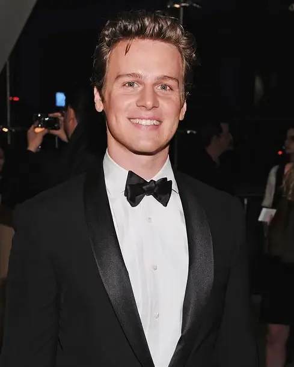

DETALLE - Johnathan Groff
Personaje : Holden Ford
Holden Ford es un agente del FBI de la Unidad de Ciencias del Comportamiento. Anteriormente trabajó como negociador de rehenes e impartió clases en esa área.
Historia
Ataques de pánico
Después de su visita a Kemper, Holden se despertó en una cama de hospital, luchando por respirar. El médico le dijo que había tenido un ataque de pánico. Cuando se calmó, el médico le explicó que podría ser propenso a futuros ataques y le dio una receta para ayudarle a calmarse. También le aconsejó que controlara su estrés y evitara lo que desencadenó el primer ataque de pánico. Más tarde le contó a Wendy sus ataques y le pidió consejo. Ella le dijo que estuviera atento a las señales de que se avecinaba un ataque porque no quería sufrir un ataque mientras entrevistaba a un sujeto. También le ofreció su oído si quería hablar.
Conociendo a Gunn
Después de enterarse de que Shepard se retiraba y Gunn era su reemplazo, Holden se reunió con él. Se ganó a Holden con su entusiasmo por su trabajo y le prometió conseguirle una entrevista con Charles Manson, la entrevista que deseaba por encima de todas las demás. Después de reunirse con Gunn, Holden quiso aclarar las cosas con el equipo y revisó los candidatos para saber quién envió la cinta. Concluyó que fue Gregg, quien dijo que tenía que hacerlo porque no quería que se convirtiera en un terreno resbaladizo. El equipo estaba discutiendo sobre eso cuando Gunn entró y dijo que les daría todos los recursos que necesitaran para terminar su trabajo en mucho menos tiempo y también les mostró su nuevo espacio de oficina al final del pasillo, que era mucho más grande.
BTK
Después de que un amigo suyo le mostró a Bill los archivos del caso BTK, Bill voló a Kansas para hablar con Bernie Drowatzky, un detective que había estado en los casos desde el principio. Después de esa visita, habló con Holden sobre la visita y discutieron su caso en el contexto de otros a quienes parecía estar emulando, particularmente David Berkowitz. Luego decidieron que necesitaban entrevistar a Berkowitz inmediatamente, con la esperanza de que les ayudara a entender BTK. Antes de irse, Wendy llevó a Bill al bar y le dijo que necesitaba vigilar a Holden y detectar signos de un ataque de pánico y sacarlo si comenzaba a tener uno. Durante la entrevista, se sorprendieron al escucharlo admitir que había inventado la historia del perro que le decía que matara. También reveló que cazaba todas las noches y esperaba que todo se arreglara. Dijo que regresó al lugar para aliviar el crimen, pero no se llevó ningún trofeo. Sospechaba que BTK también cazaba todas las noches y dijo que no podría resistirse a volver a la escena del crimen. Al discutir la entrevista con Wendy, decidieron que necesitaban crear una nueva categoría que considere no solo si siguen sus casos en los medios, sino cómo manipulan a los medios ellos mismos.
Entrevista a Manson y consultoría con Kemper
Gunn entró y le dijo al equipo que había conseguido una entrevista con Charles Manson en dos semanas. Para prepararse para la entrevista, hablaron sobre cómo se unió la dinámica de la Familia y dijeron que ese era su interés principal, ya que Manson nunca mató a nadie. Necesitaban saber cómo podía persuadir a los jóvenes de clase media para que se unieran a su familia y mataran por él. Cuando fueron a la entrevista, Manson inicialmente se negó a salir de su celda para hablar con ellos, por lo que fueron a hablar con Kemper, mientras esperaban, con la esperanza de que eso ayudara a sacarlo. Kemper dijo que si realmente querían saber sobre los asesinatos, deberían hablar con Tex Watson, porque Manson nunca mató a nadie y no sabe cómo es. Le preguntaron a Kemper por qué regresó a las escenas del crimen y dijo que volver a visitar las escenas le permitió revivir los crímenes para obtener satisfacción sexual. Poder revivir los crímenes le ayudó a retrasar el tener que volver a matar, porque se había convertido en una compulsión. Cuando no podía ir a las escenas, tenía recuerdos que guardaba y que lo ayudaron. Cuando Manson estuvo listo, se trasladaron a otra habitación y lo trajeron. Se apoyó en una silla y hablaron sobre su relación con la familia. Negó haberle dicho a alguien que matara a alguien más y dijo que simplemente acogió a personas que habían sido descartadas por la sociedad. También negó haber intentado iniciar una guerra racial. Dijo que los miembros de la familia contaron la historia que mejor les funcionó. Bill comenzó a discutir con Manson, lo que culminó cuando Bill terminó abruptamente la entrevista y se fue. Con Bill obligado a regresar a Virginia, Holden fue solo a entrevistar a Tex Watson, quien se había hecho cristiano en prisión. Habló de la influencia de Manson sobre ellos, enseñándoles cómo matar gente y dándoles drogas para que no tuvieran miedo de hacerlo.
Relaciones
Románticas
Estaba en una relación con Debbie Mitford. Se separaron debido a la creciente arrogancia de Holden y la falta de reciprocidad emocional, ya que prefería hablar de las entrevistas del asesino en serie antes que escuchar las opiniones o estudios de Debbie. Debbie dijo que ya no era el mismo hombre que había conocido por primera vez. Holden también sospechaba que ella lo estaba engañando con un compañero de la escuela. Holden hizo un perfil de ella y se fue al darse cuenta de su intención de romper.
Familiares
Le gusta hablar con su madre. Una vez lo encontró tocándose y lo regañó por ello. Su padre le compra los trajes.
Amistades
Holden no tiene amigos fuera de BSU.
Profesional
Su socio en la BSU es Bill Tench, que se preocupa por él. Holden admira a Bill como el agente federal con más experiencia. Bill reconoció las brillantes ideas de Holden y reconoció su valor para Holden como un agente respetable y conocido cuya palabra sería tomada en serio por sus pares. Trabajaron juntos para formar su departamento de elaboración de perfiles.
Trivia
- Desde que Ed Kemper lo abrazó, Holden ha luchado contra ataques de pánico.
- Holden atraviesa una serie de factores estresantes que culminan en un ataque de pánico. Holden ha observado que los asesinos en serie pasan por una serie de factores estresantes antes de empezar a matar. En The Psychopath Test, el periodista Jon Ronson señala que una de las diferencias entre psicópatas y no psicópatas es que los psicópatas no sienten ansiedad.
- Holden está basado en el agente y perfilador del FBI de la vida real, John Douglas.
- Holden nació en Brooklyn, Nueva York.